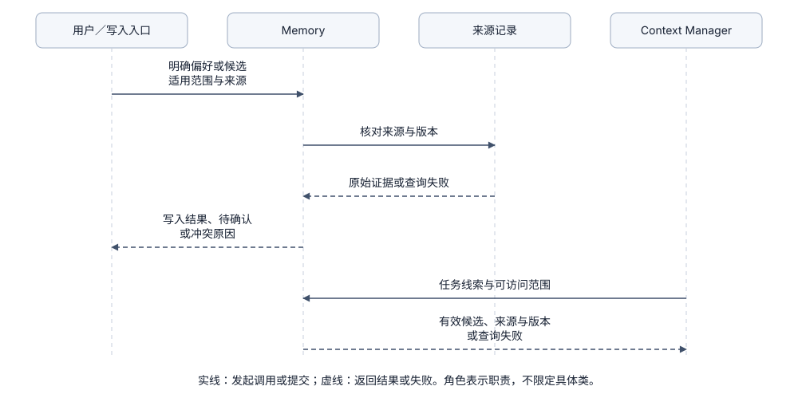

Memory：选择跨会话保留的知识
1. 问题起点：哪些信息值得跨会话记住？
在单次会话中，Session / State 保存了完整的对话与工具记录；但开启一个新会话时，我们既希望程序记住稳定的项目事实与用户偏好，又不希望把上一次任务的临时报错当成永久事实带入新会话：
- 适合跨会话保留的知识：如“本项目使用
uv管理依赖”、“用户偏好报告末尾列出数据来源”。 - 不适合作为长期记忆的临时状态：如“刚才某次测试失败”、“某文件第 10 行有个临时语法错误”（这些与特定时刻和产物版本强绑定，一旦代码修改就会失效）。
Memory：受控写入、按需读取与显式遗忘（后续能力，当前尚未实现）
- 写入流程判断“是否值得长期记住”：核对来源、适用范围（用户级 / 项目级）与已有条目冲突，确认后按版本保存。
- 读取流程判断“当前任务是否适用”：先按用户与项目作用域过滤，再检索相关条目交由 Context Manager 组装。
- 维护生命周期：长期记忆必须支持更正、过期失效与显式删除（遗忘）；向量相似度高只代表语义相近，不证明该条目仍然真实有效或拥有权限。
2. 模块协作：State、Memory 与 Context 如何分工？
- 写入路径（State → Memory）：当用户明确提出“以后报告都附来源”，或从 State 的历史消息中提取候选条目时，Memory 核对原始记录 ID、适用范围与确认条件后写入存储（模型提取的候选不能未经核对直接当作既定事实）。
- 读取路径（Memory → Context Manager）：新任务开始时，Memory 根据当前项目与任务线索返回带来源、版本和有效状态的候选条目，由 Context Manager 根据预算筛选后放入本轮输入。
- 权限与异常边界：若允许模型调用工具写记忆，仍须经过 Tools 与 Policy 校验，且记忆内容绝不能扩大工具执行权限；同时需明确区分“检索无命中”“记忆已过期”和“存储查询失败”。

3. 概念解耦：先区分“知识类型”与“存储介质”
- 按知识类型划分（决定生命周期与复用方式）：
- 事实与偏好：如项目环境约定、用户格式要求，需记录来源与适用范围。
- 经验案例（Episodic）：过去成功或失败的排障记录，供类似问题参考。
- 可复用操作方法（Procedural）：固定的多步工作流，通常更适合沉淀为独立的 Skill（见 Extensions）。
- 按存储与检索介质划分（决定工程实现，可组合使用）：
- Markdown 文件：适合人工直接审阅、编辑和纳入 Git 版本控制。
- 关系型数据库（SQLite）：适合管理结构化元数据、版本、作用域过滤与精确关键词查询（FTS）。
- 向量索引（Embedding）：适合在海量条目中按语义相近度召回候选。
4. 核心方案对比：4 种记忆实现方式
以下方案分别对应不同的存储检索方式（A–C）与写入方式（D），可按需组合（当前均未接入）：
A. 用户维护的索引 + Markdown 文件记忆
- 做法：用简短索引文件列出主题，正文存放在 Markdown 文件中；每次运行只加载索引概览，按需读取对应正文。
- 适用场景：单用户本地开发、记忆条目少且希望人工直接审阅和修改的场景。
- 代价与局限：多会话并发写入的冲突合并、作用域隔离与过期清理需要额外约定；若每次全量加载所有文件会迅速挤占上下文。
B. SQLite 结构化条目 + 关键词检索（SQL / FTS）
- 做法：用数据表保存条目 ID、类型、作用域、来源引用、版本号与状态，按项目、时间和关键词（或全文检索 FTS）过滤。
- 适用场景：需要严格作用域隔离、版本更正、撤销审计与精确术语匹配的场景。
- 代价与局限：需要维护表结构；当用户换用同义词提问时，纯关键词检索可能无法命中。
C. 向量或混合检索（Hybrid Search）
- 做法：为记忆条目生成 Embedding 向量，结合作用域过滤、时效过滤、关键词匹配与语义检索召回候选。
- 适用场景：记忆条目数量大、同一含义存在多种自然语言表述的场景。
- 代价与局限：增加 Embedding 调用、索引重建与召回质量评测成本；且作用域与权限过滤必须在向量召回前或召回中生效，绝不能先跨项目召回 Top-K 再过滤。
D. 模型自动提取与后台定期整理
- 做法：在任务结束或上下文压缩前，调用模型从对话中提取候选记忆，经去重、冲突对比与确认后更新记忆库。
- 适用场景：对话频繁、难以完全依赖人工手动维护记忆的场景。
- 代价与局限：模型可能把猜测当成事实、把单次临时要求当成永久偏好；应记录提取版本与来源，先支持人工确认或回滚，再逐步提高自动化比例。
| 方案 | 适用场景 | 核心收益 | 主要挑战 |
|---|---|---|---|
| 文件索引与正文 | 少量、需人工直接审查的知识 | 透明直观、易迁移 | 并发合并与作用域管理 |
| SQL 条目与关键词 | 需版本更正、撤销与严格隔离 | 过滤精准、行为可解释 | 同义不同词时难以召回 |
| 混合检索 | 条目多、表述方式多样 | 语义召回率更高 | 索引维护与评测成本高 |
| 自动提取整理 | 减少人工维护负担 | 自动沉淀偏好与事实 | 易写入错误猜测或过期冲突内容 |
5. 开源与工业界实现对照
- Claude Code（官方文档）：记忆说明区分用户手动维护的规则文件与自动记忆；自动记忆维护受大小限制的
MEMORY.md简短索引，具体主题文件按需读取，方便用户随时查看与编辑。 - Deep Agents（源码核对）：MemoryMiddleware 在启动阶段加载指定作用域（用户级或 Agent 级）的记忆文件并在请求阶段注入（参考官方记忆文档）。
- AgentScope Java（官方文档）：Memory 设计采用“按日追加原始记录 + 定期合并为长期记忆文件”的两阶段流程，并将长期记忆作为参考资料放入 Context。
- LangChain Store（官方文档）：长期记忆 Store 通过
namespace（如用户 ID、项目 ID）和key组织条目，支持在指定命名空间内检索。
6. 推荐数据结构设计
若后续实现结构化记忆条目，建议包含作用域、来源追踪、版本替代与确认状态字段（设计示意，当前代码尚未建表）：
{
"id": "memory_001",
"scope": {"user_id": "local", "project_id": "learn-agent"},
"kind": "project_fact",
"text": "项目使用 uv 管理依赖。",
"source_ids": ["run_x/message_1"],
"version": 1,
"status": "active",
"supersedes": null,
"created_at": "2026-10-18T00:00:00Z",
"expires_at": null,
"confirmed_by": "user"
}
- 程序维护元数据：
id、scope和version由程序生成，source_ids指向可追溯的原始会话记录。 - 防止模型伪造确认：
confirmed_by只能由应用根据真实用户交互填写，不能由提取模型自行输出。
7. 生命周期管理：更正、遗忘与时效
- 版本更正（Supersede）：当事实或偏好改变时，将旧条目的
status标为被替代，并写入指向旧条目 ID 的新版本；读取时只加载active条目。 - 彻底遗忘（Forget）：删除记忆时必须同步清理正式存储、检索索引和待提取标记。若只删索引不标来源，后台任务仍可能从旧对话历史里把已删除的内容重新提取出来。
- 时效与权限边界：临时状态设置过期时间（
expires_at）；记忆里哪怕写着“用户曾批准覆盖文件”，也不能代替当前运行的权限检查，一切工具动作仍由 Policy 实时判定。
8. 本项目当前实现与未实现范围
9. 期望达到的效果（后续长期记忆练习）
在后续阶段接入 Memory 模块时，可通过跨会话与跨项目实验进行验证。
期望达到的效果：
- 跨会话准确复用：在会话 A 中保存的项目偏好，开启同一项目的会话 B 时能自动生效并带上来源引用。
- 跨项目严格隔离：切换到另一个项目工作区时，绝不会混入前一个项目的专属记忆条目。
- 更正后旧值失效：用户修改偏好后，新会话只注入最新版本，不再出现被替代的旧规则。
- 遗忘后不再复活：执行遗忘操作后，正式条目与索引同步清除，且后续自动提取不会从旧历史中将其重新写回。
- 不突破权限边界：任何记忆内容都无法开启未被 Policy 允许的写操作权限。